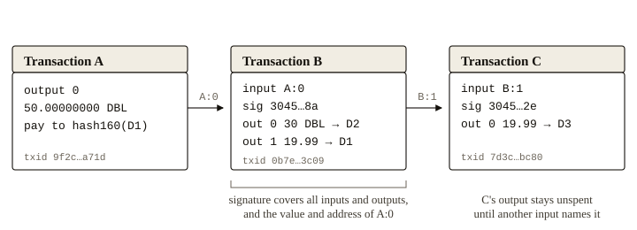
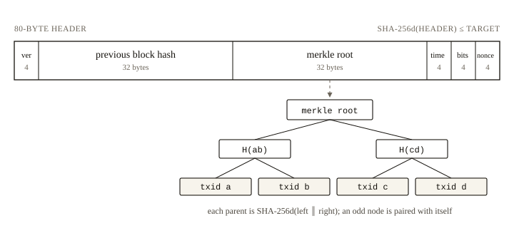
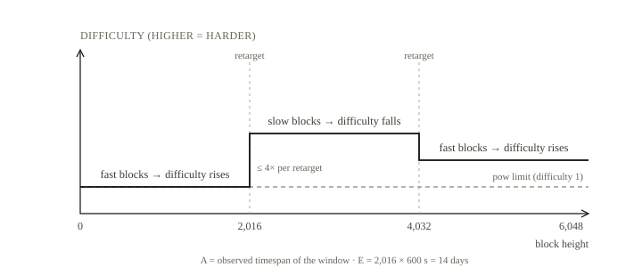

Doubloom: A Bitcoin-Style
Peer-to-Peer Electronic Cash System
October 2026 — Reference implementation: this repository
Abstract. A purely peer-to-peer form of electronic cash would let one party pay another directly, without a financial institution in the middle. Doubloom is an independent implementation of that design. Coins are unspent transaction outputs, transferred with secp256k1 signatures and ordered by a timestamp server built from SHA-256 proof-of-work. A fixed schedule issues 50 DBL per block, halved every 210,000 blocks, for a nominal maximum of 21,000,000 DBL. Blocks target ten minutes and difficulty is retargeted every 2,016 blocks, so the issuance rate is predictable and owes nothing to an issuer. Every full node validates every rule, and the chain with the most accumulated work wins. Doubloom keeps Bitcoin's monetary and consensus design while using a compact, readable implementation: canonical JSON transactions, pay-to-public-key-hash outputs only, and an HTTP peer protocol. It is experimental software, not a claim on any asset, and it began with no pre-mine.
1. Introduction
Online payments today depend almost entirely on financial institutions acting as trusted intermediaries. That arrangement works for most transactions, but it carries the weaknesses of any trust-based model: payments cannot truly be reversed without a mediator, mediation costs raise the floor on transaction size, and participants must give up information they would rather keep. What is needed is a payment system built on cryptographic proof instead of institutional trust, so that any two willing parties can transact directly.
The central obstacle is double spending. A digital token is trivial to copy, so a payee needs evidence that the payer did not sign an earlier transaction spending the same coin. The only way to establish the absence of such a transaction is to be aware of all transactions. A mint that sees every payment could provide that guarantee, but then the mint is the system. Doubloom removes the mint by publishing every transaction and having the network agree, through computational work, on a single order in which those transactions occurred. Each block commits to the one before it, so changing past history means redoing the work that secures it.
Doubloom is a complete, from-scratch implementation of this idea rather than a token issued on another chain, a smart contract, or a modified copy of Bitcoin's codebase. It reimplements the parts that matter for sound money: the UTXO ledger, ECDSA authorization, SHA-256 mining, difficulty adjustment, halving, and independent validation. It leaves out the parts that do not: a scripting language, SegWit, Taproot, and the Lightning Network.
Three properties define the project. First, the monetary policy is fixed at genesis and cannot be changed by any participant. Second, every node validates every block and every signature for itself; no checkpoint, foundation, or trusted server can overrule it. Third, there is no privileged participant: no founder allocation, no developer tax, no vesting schedule. The one subsidy that could have been a pre-mine, the genesis reward, is sent to a burn address and can never be spent.
The remainder of this paper describes transactions (Section 2), the timestamp server (3), proof-of-work and difficulty (4), the network (5), incentives and supply (6 and 7), validation (8), privacy (9), security (10), and where Doubloom deliberately differs from Bitcoin (11).
2. Transactions
We define an electronic coin as a chain of digital signatures. The owner of a coin transfers it by signing a statement that names the coin's previous transaction and the public key of the next owner. A payee can verify the signatures and thereby verify the chain of ownership.
Doubloom uses the unspent transaction output model. A transaction is a list of inputs and a list of outputs. An input names an outpoint, which is the id of an earlier transaction together with the index of one of its outputs, and carries the spender's uncompressed secp256k1 public key plus a DER-encoded ECDSA signature. An output assigns an integer number of petals to a 20-byte public key hash, where 100,000,000 petals make one DBL. A coin is therefore not a file but a chain of authorizations ending in outputs that have not yet been spent. The pair (transaction id, output index) uniquely identifies every coin in existence.
The signature commits to more than the outpoint. It covers the transaction version, the locktime, every input's outpoint and sequence number, every output's value and address, and the value and address of the output being spent. Committing to the spent value prevents an attack in which a relayer alters the amount a signature authorizes. Doubloom defines a single signature hash type, equivalent to Bitcoin's SIGHASH_ALL.
Serialization. Bitcoin encodes transactions in a bespoke binary format. Doubloom instead uses canonical JSON with a fixed field order, and defines the transaction id as SHA-256d of that encoding. The choice trades byte-level compatibility for auditability: a transaction can be read, signed, and checked with ordinary web tools. It does not change the security model, but it is why a Doubloom transaction id differs in form from Bitcoin's.

The payee still cannot tell whether an owner signed an earlier transaction spending the same coin. In a mint-based system the mint knows every transaction and can vouch for the first one seen. Without a mint, the only way to confirm that a transaction is absent is to see all transactions. They must therefore be announced publicly, and the participants must agree on one history. Section 3 describes how that history is built.
3. Timestamp Server and Blocks
A timestamp server takes a hash of a block of items, publishes the hash, and thereby proves that the items existed at a particular moment. Each timestamp includes the previous timestamp in its hash, forming a chain in which every additional timestamp reinforces the ones before it. Doubloom's timestamp server is a chain of blocks secured by proof-of-work.
A block has two parts: an 80-byte header and a list of transactions. The header contains the block version, the hash of the previous header, the root of a merkle tree over the transaction ids, the block time, the compact encoding of the difficulty target, and a nonce. Because the header commits to the merkle root, and the root commits to every transaction in the block, altering a single transaction changes the header hash and destroys any proof-of-work built on that header.
The merkle tree is formed by hashing pairs of transaction ids until one hash remains; on a level with an odd number of elements, the last element is paired with itself. This is the construction Bitcoin uses, and it allows a transaction to be proven present in a block with a number of hashes logarithmic in the block's transaction count.

A block may be at most 1,000,000 bytes and must contain exactly one coinbase transaction, first. Blocks are produced roughly every ten minutes. The interval is not enforced by a clock but by the difficulty target: blocks that arrive too quickly tighten the target, and blocks that arrive too slowly loosen it. A block's timestamp must exceed the median of the previous eleven blocks and must not be more than two hours ahead of the receiving node's clock. The median rule bounds how far a miner can drag the reported time forward or backward without invalidating the block.
Every full node stores the entire chain. From it, a node derives the UTXO set, the set of outputs that exist and have not been spent, along with an index from transaction id to block height. Both are rebuilt and re-verified from the stored blocks when the node starts, so a corrupt or forged chain fails validation instead of being trusted.
4. Proof-of-Work
To make the timestamp server distributed rather than operated, Doubloom uses a proof-of-work system in the tradition of Hashcash. Mining a block means finding a 32-bit nonce such that the double SHA-256 hash of the 80-byte header, read as a 256-bit integer, is at or below a target T. The target travels in the header in Bitcoin's compact "bits" notation, which fits it into four bytes. Verification costs a single hash; the search costs roughly 2256/(T + 1) hashes on average. When the nonce space is exhausted, the miner increments the block time and continues.
Once the work has been spent to satisfy the proof-of-work, the block cannot be changed without redoing that work. As later blocks are chained after it, changing it also requires redoing every block that followed. The work is not proof that a particular miner created the block; it is proof that a particular amount of computation was spent on that history, which is what makes rewriting it expensive.
Difficulty adjustment. To keep the ten-minute interval, Doubloom retargets every 2,016 blocks. Let A be the elapsed time between the first and last block of the window and E = 2,016 × 600 seconds the expected time. The new target is
T′ = min( P, clamp( T × A / E, T/4, 4T ) ), where P is the proof-of-work limit, the easiest permitted target.
The four-fold clamp keeps a single anomalous window from moving the target too far, and the minimum with P keeps the network from becoming trivially mineable. Retargets are computed only from data in the chain, so every node derives the same target at the same height.

Mainnet begins at the easiest permitted target, which requires about 216 hashes per block. This is a deliberate bootstrap choice for a new network; at Bitcoin's 2009 difficulty, a new chain's first blocks would take years to find. The ordinary retarget rule raises difficulty as soon as blocks arrive faster than one per ten minutes. Devnet, the test network, retargets every 20 blocks with a 60-second target and an easier limit; it is not economic and its coins have no relationship to mainnet coins.
Cumulative work. Proof-of-work also settles which history is authoritative. The rule is not "longest chain" in blocks but "most work." Each block contributes
W(T) = ⌊ 2256 / (T + 1) ⌋
units of work, and a node adopts a competing chain only if its cumulative work is strictly greater. A chain of many easy blocks can therefore lose to a shorter chain of difficult ones, which is the correct comparison: work, not block count, is what an attacker must reproduce.
5. Network
The steps to run the network are as follows:
- New transactions are broadcast to all nodes.
- Each node collects new transactions into a block, validating each against its UTXO set and the minimum relay fee.
- Each node works on finding a difficult proof-of-work for its block.
- When a node finds a proof-of-work, it broadcasts the block to all nodes.
- Nodes accept the block only if all transactions in it are valid and not already spent.
- Nodes express acceptance by working on the next block, using the hash of the accepted block as the previous hash.
Nodes always consider the chain with the greatest cumulative work to be correct and keep extending it. If two nodes broadcast different versions of the next block at nearly the same time, some nodes will see one first. They work on the first they received but retain the other branch in case it accumulates more work. The tie breaks when the next block is found on one branch; nodes on the other branch switch to the chain with more work.
Transport. Bitcoin's peers exchange inventory messages and request individual blocks over a binary TCP protocol. Doubloom peers speak HTTP with JSON bodies: a node can fetch a peer's full chain, submit a transaction or block, and register itself as a peer. Each node syncs from its peers on start and every twenty seconds, and relays newly accepted transactions and blocks immediately. The protocol is intentionally small and is neither optimized for bandwidth nor encrypted; it assumes peers are reachable and trusted only to serve data that will be validated. Full nodes are the only supported clients. There is no simplified payment verification in this implementation.
Reorganizations. When a peer presents a chain with more work, the node locates the fork point, replays the winning branch, rebuilds the UTXO set, and re-validates every mempool transaction against the new state. Transactions confirmed only on the abandoned branch return to the mempool if they remain valid. Because the rules are deterministic, every node that adopts the same chain computes the same UTXO set and the same balances.
6. Incentive
The first transaction in each block is special: it creates new coins and assigns them to the block's miner. This both distributes coins initially, since there is no central issuer, and compensates the nodes that secure the network. The steady addition of a fixed number of new coins resembles gold miners spending resources to put more gold into circulation; here the resource is computation and electricity.
The subsidy is 50 DBL for the first 210,000 blocks. It halves every 210,000 blocks thereafter: 25 DBL, then 12.5, and so on. Transaction fees — the value of a transaction's inputs minus the value of its outputs — are collected by the miner as well. The coinbase output may claim the subsidy plus the sum of all fees in the block, and not one petal more. The minimum relay fee is one petal per byte, which prices the block space a transaction consumes and gives miners a reason to include it.
The incentive also discourages dishonesty. An attacker who assembles more computation than the honest network must choose between using it to reverse payments and using it to mine new coins. Playing by the rules pays better than undermining a system whose coins are the reward, and an attacker who undermines confidence in the coin also undermines the value of what he accumulates. As the subsidy declines, fees take over; whether that is enough to secure the network in the distant future is an open economic question, not a property this paper can prove.
The genesis subsidy is an exception. Its coinbase output pays a burn address whose public key hash is twenty zero bytes, for which no key is known. The coins are visible on chain and can never be spent. Doubloom therefore has no pre-mine, no founder allocation, and no vesting schedule. Coinbase outputs also mature for 100 blocks before they can be spent, which prevents a reorganization from invalidating a long chain of spends built on very young coins.
7. Money Supply
The subsidy at height h is
S(h) = ⌊ 50 × 108 / 2⌊h / 210,000⌋ ⌋ petals, so every era pays an integer number of petals, the smallest unit.
Summing the eras gives a geometric series whose limit is 50 × 210,000 × 2 = 21,000,000 DBL. Because each era truncates to whole petals, the last eras round down. The total that can ever be minted is 20,999,999.9769 DBL, slightly less than the nominal cap — the same kind of rounding Bitcoin exhibits at 20,999,999.9769 BTC.
| Era | Height range | Subsidy (DBL) | Cumulative supply (DBL) |
|---|---|---|---|
| 0 | 0 – 209,999 | 50 | 10,500,000 |
| 1 | 210,000 – 419,999 | 25 | 15,750,000 |
| 2 | 420,000 – 629,999 | 12.5 | 18,375,000 |
| 3 | 630,000 – 839,999 | 6.25 | 19,687,500 |
| 4 | 840,000 – 1,049,999 | 3.125 | 20,343,750 |
| … | … | … | … |
| 32 | 6,720,000 – 6,929,999 | 0.00000001 | 20,999,999.9769 |
| 33+ | 6,930,000 and after | 0 | 20,999,999.9769 |
At ten minutes per block, the last subsidy is issued roughly 132 years after genesis. From that point miners are paid only by fees. There is no cap on the number of transactions, only on block size. Divisibility is fixed at eight decimal places, so the smallest payment is one petal and the largest single output is the whole money supply; the wallet treats change below 546 petals as dust and leaves it to the miner rather than creating an uneconomic output.
8. Validation
A full node accepts a block only if every one of these conditions holds:
- The header's previous hash equals the hash of the current tip.
- The header's difficulty bits equal the target that the retarget algorithm prescribes for that height.
- The header hash is at or below the target.
- The merkle root matches the block's transactions.
- The timestamp is greater than the median time past and no more than two hours in the future.
- The block is at most 1,000,000 bytes and contains exactly one coinbase, in the first position.
- The coinbase commits to its block height and claims no more than the subsidy plus the fees of the included transactions.
- Every other transaction spends existing unspent outputs, spends no output twice, carries a valid signature for every input, and pays at least the relay fee.
- No coinbase output is spent before 100 confirmations.
- No output is zero or negative, and no output exceeds the 21,000,000 DBL cap.
A transaction enters the mempool only if it satisfies the transaction rules against the current UTXO set plus the outputs of other mempool transactions, and only if none of its inputs is already claimed by a mempool transaction. Blocks are assembled from the mempool in descending fee rate, with each transaction placed after any mempool transaction that funds it, so that a chain of unconfirmed transactions can confirm within a single block.
These rules are deterministic. Two nodes that have seen the same blocks compute the same UTXO set, the same balances, and the same verdicts, regardless of the order in which the blocks arrived or which node mined them.
9. Privacy
Traditional banking obtains privacy by revealing information only to the parties involved and to the trusted intermediary. Publishing all transactions rules that out, but the flow of information can be broken elsewhere: public keys can remain anonymous. Observers can see that coins moved from one address to another without knowing who controls either, much as a stock exchange publishes trades without publishing who traded.
As an additional precaution, a new key pair should be used for every payment so that addresses cannot be linked to a common owner. Some linking remains unavoidable: a transaction with several inputs necessarily reveals that those inputs shared an owner. Doubloom's wallet is deliberately simple. It generates independent keys, but it returns change to the sending address and implements no CoinJoin, no confidential amounts, and no automatic address rotation. In practice, on-chain analysis can link much of a careless user's activity. Doubloom offers pseudonymity, not anonymity, and users who need more should not assume the protocol provides it.
10. Security Considerations
The fundamental assumption is that honest nodes control more computation than any coalition of attackers. An attacker with a majority of hash power can exclude transactions, reverse his own payments, and mine empty blocks, but he cannot spend other people's coins, mint beyond the subsidy, or rewrite old blocks without redoing their work. The probability that an attacker catches up from k blocks behind falls exponentially with k, which is why a payee should wait for more confirmations as the value at risk grows.
The implementation has additional, non-consensus weaknesses that a production network would have to fix. The peer protocol is unauthenticated HTTP without rate limits, so a node is easy to flood or eclipse; it should stay behind a firewall until hardened. Wallet private keys can be encrypted at rest: each key is sealed separately with AES-256-GCM under a key derived from a user passphrase with scrypt, with the network and address authenticated as additional data. A stolen encrypted wallet file therefore does not by itself yield a balance. The passphrase can be changed by re-encrypting every key under a fresh salt, and that conversion too never writes plaintext. The guarantee is only as strong as the passphrase, and it ends whenever the wallet is unlocked or a signing command holds the keys in memory. There is no hardware-wallet, multisig or offline-signing support, and no passphrase recovery, so a forgotten passphrase destroys the keys as surely as a lost file. There is no SPV client, no block pruning, and no compact block relay, so storage and bandwidth grow with the chain. There is no hardening against difficulty time-warp attacks beyond the median-time-past rule, and no checkpointing or signature aggregation. The code has not been audited. It is a reference implementation for study and experimentation, and nothing here invites anyone to entrust it with value.
11. Differences from Bitcoin
Doubloom follows Bitcoin's monetary and consensus design closely, but it is a reimplementation, not a fork, and it is deliberately smaller. The differences are listed so that no reader mistakes compatibility for resemblance.
| Area | Bitcoin | Doubloom |
|---|---|---|
| Serialization | Custom binary | Canonical JSON |
| Transaction id | SHA-256d of bytes | SHA-256d of canonical JSON |
| Script | Stack language, many output types | Pay-to-public-key-hash only |
| Signatures | ECDSA and Schnorr, several hash types | ECDSA secp256k1 (DER), SIGHASH_ALL |
| Addresses | base58check, usually starting with 1 or bc1 | base58check, starting with D |
| Block limit | 1 MB base size / 4 M weight units | 1,000,000 bytes |
| Retarget | Every 2,016 blocks, 4× clamp | Same |
| Subsidy | 50 BTC, halved every 210,000 blocks | 50 DBL, halved every 210,000 blocks |
| Genesis difficulty | 0x1d00ffff (about 2³² hashes) | 0x1f00ffff (about 2¹⁶ hashes) |
| Peer protocol | Binary TCP, inventory and block relay | HTTP/JSON, full-chain sync and relay |
| Storage | LevelDB | JSON file, UTXO rebuilt on load |
| Wallet keys | Optional encryption | Optional AES-256-GCM (scrypt) |
| SPV, pruning, Lightning | Supported | Not implemented |
These choices make Doubloom easier to read and audit, not better than Bitcoin. The monetary rules and the proof-of-work model are the parts worth copying, and they are copied faithfully. The rest is a consequence of building a small system that can be understood in an afternoon.
12. Conclusion
We have described a system for electronic transactions that does not depend on trust. Doubloom reproduces Bitcoin's essential mechanism — an append-only ledger of unspent outputs, ordered by a chain of proof-of-work timestamps, with a fixed and halving issuance schedule — in a small, readable implementation. The monetary rules are fixed at genesis, validation is open to anyone, and no participant holds privileges that others do not. The network's omissions are as much a part of the design as its rules.
The coin is not money. It is a testable statement of an idea: that sound money can be described in a few thousand lines, audited by anyone, and run by anyone. We invite readers to read the code, run a node, and attack the assumptions.
References
- S. Nakamoto, “Bitcoin: A Peer-to-Peer Electronic Cash System,” 2008.
- A. Back, “Hashcash — A Denial of Service Counter-Measure,” 2002.
- R. C. Merkle, “A Digital Signature Based on a Conventional Encryption Function,” CRYPTO '87, 1987.
- Certicom Research, “SEC 2: Recommended Elliptic Curve Domain Parameters,” Standards for Efficient Cryptography, 2010.
- H. Dobbertin, A. Bosselaers, and B. Preneel, “RIPEMD-160: A Strengthened Version of RIPEMD,” 1996.
- Bitcoin Wiki, “Base58Check encoding,” en.bitcoin.it/wiki/Base58Check_encoding.
- Bitcoin Wiki, “Difficulty,” en.bitcoin.it/wiki/Difficulty.
- The Doubloom source code and test suite, this repository.
Doubloom · Đ · DBL — prepared October 2026. This document is informational; it is not an offer, a security, or investment advice.